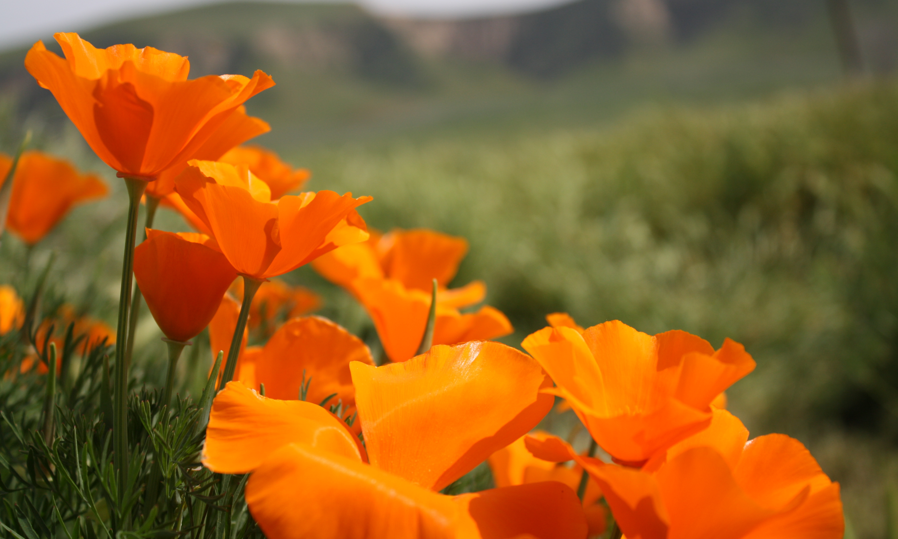
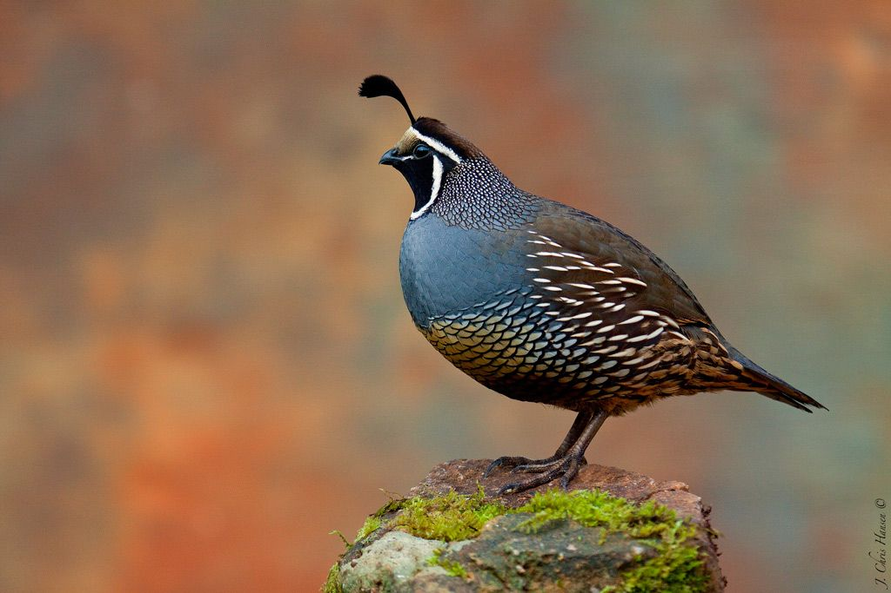
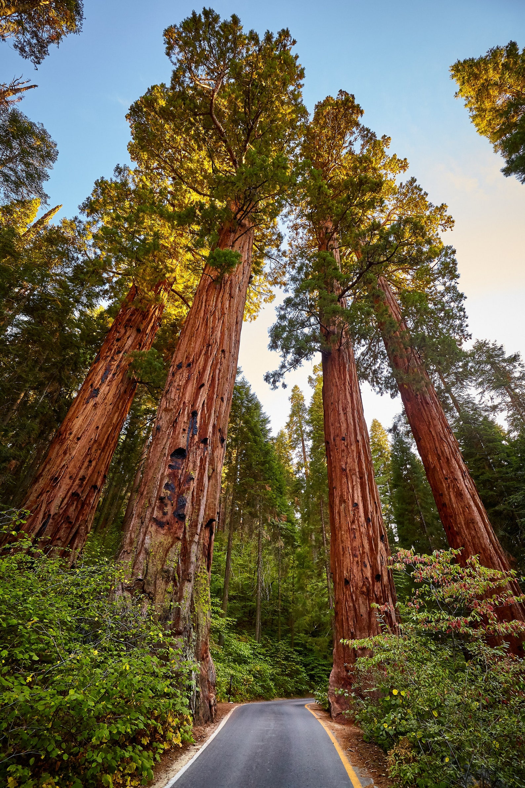

The first Spanish missionaries arrived in California in the 1700s, but California didn’t become a U.S. territory until 1847, as part of the treaty ending the Mexican-American War. Shortly thereafter, the discovery of gold at Sutter’s Mill in 1848 inspired a wave of settlers to head to the west coast in search of fortune. In 1850 California became the 31st state, and is now the third-largest state behind Alaska and Texas. With millions of acres of farmland, California leads the U.S. in agricultural production. The state is also home to famous cultural institutions and national parks including Hollywood, Disneyland, Yosemite National Park, Alcatraz, Angel Island and the Golden Gate Bridge.
| Date of Statehood | Capital | Population | Size |
|---|---|---|---|
| September 9, 1850 | Sacramento | 39.54 million | 163,694 square miles |
Eureka (“I have found it”)
Poppy
California Valley Quail
California Redwood
Interesting facts